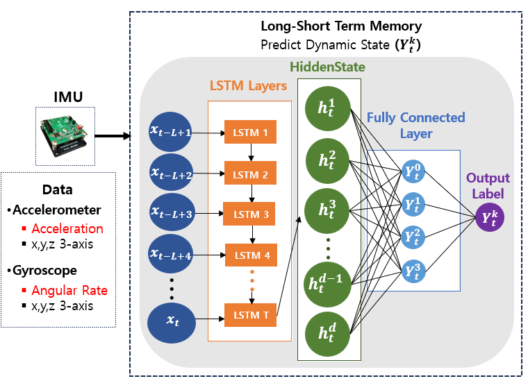
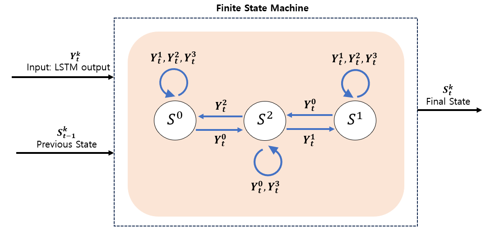
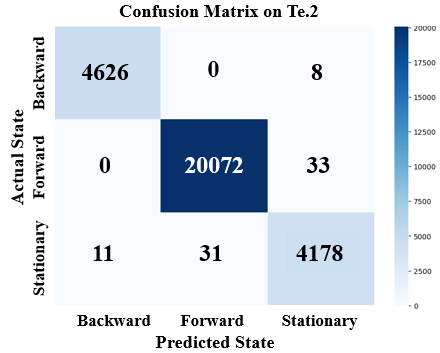
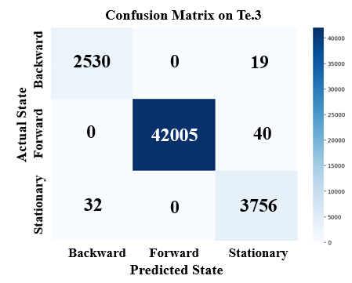
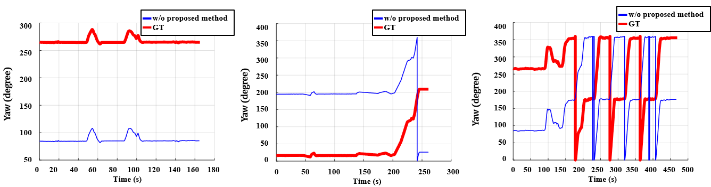
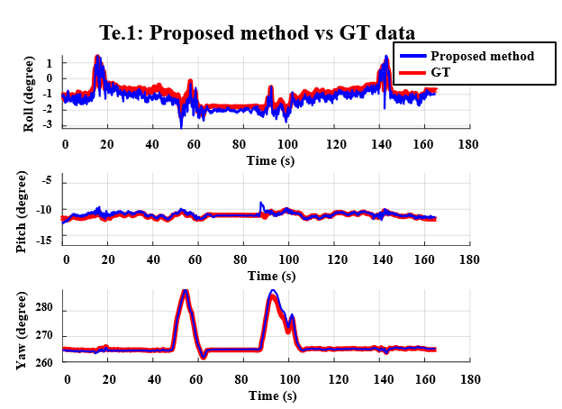
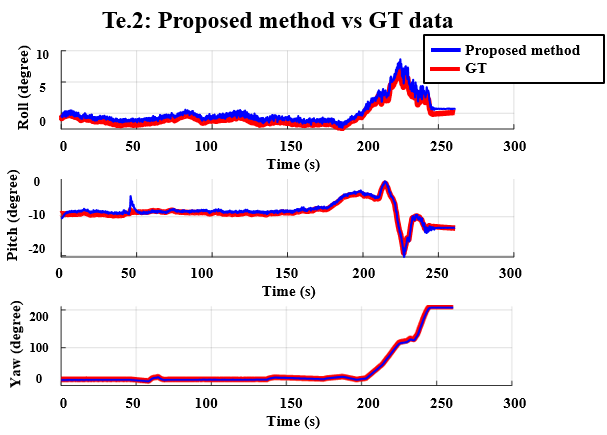
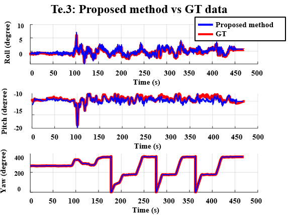

내부 제어기에 연결하지 않고 외부 센서만으로 상태 판별
과학기술정보통신부 국가 R&D · OFF-ROAD NAVIGATION
IMU 기반 LSTM-FSM 주행상태 판별
기어, 브레이크, 차량 CAN 신호를 사용할 수 없는 반자율주행 트랙터에서 IMU 시계열만으로 전진, 후진, 정지를 판별한 항법 모듈. LSTM의 순간 예측에 FSM 상태전이 규칙을 결합해 실차 진동과 상태전환 오분류를 억제.
- 담당
- LSTM 학습, FSM 설계, ROS 통합, 실차검증
- 기술
- IMU · LSTM · FSM · ROS · Kalman Filter
- 실험
- 농로와 농지, 세 실차 경로
- 성과
- 평균 F1 99% 이상, SCIE 공동저자
01 / CONSTRAINT
판별이 필요한 이유
반자율주행 트랙터의 조향은 자동화됐지만 기어와 브레이크 신호에는 접근할 수 없었다. 전진과 후진을 구분하지 못하면 GPS 이동방향을 차체 진행방향으로 잘못 해석해 초기 yaw 정렬이 반대로 설정되고, 정지 시점을 놓치면 관성항법 오차가 계속 누적되는 조건이었다.
비용과 시스템 변경을 줄이기 위해 기존 IMU 데이터만 사용
임계값 기반 정지 검출이 지면 조건에 따라 불안정
한 시점의 가속도만으로 진행방향 직접 구분 곤란
02 / OBSERVATION
상태전환에서 찾은 단서

- 등속 구간가속도와 각속도 파형의 중첩으로 방향 판별 근거 부족
- 출발 구간전진 시작과 후진 시작의 x축 가속도 부호 차이 확인
- 문제 재정의현재 파형 분류가 아닌 상태전환 시퀀스 인식으로 전환
03 / DESIGN
LSTM-FSM 결합


모델을 키워 해결한 문제가 아니라 시간 관계를 구조에 반영한 문제. SVM, Random Forest, LSTM 모두 FSM 결합 뒤 후진 판별이 99% 수준으로 안정화.
04 / FIELD TEST
실차 실험


- 연동 기준분류기 상태와 항법 시스템의 yaw 정렬, 정지 보정 시점 정합
- 실험 기록상태별 기준과 FSM 전환 조건을 팀 내 합의한 뒤 동일 기준으로 로그 분석
- 오류 특성정상 주행 중 무작위 오분류가 아닌 상태전환 경계의 짧은 선행과 지연
05 / CLASSIFICATION
분류 결과
99%+
세 경로의 전진, 후진, 정지 F1
제안 LSTM-FSM 기준. 오분류는 상태가 바뀌는 경계 구간에 집중



| 주행상태 | 경로 1 | 경로 2 | 경로 3 |
|---|---|---|---|
| 전진 F1 | 99.84% | 99.84% | 99.95% |
| 후진 F1 | 99.75% | 99.80% | 99.00% |
| 정지 F1 | 99.53% | 99.02% | 98.80% |
| 비교 | 후진 F1 범위 | 의미 |
|---|---|---|
| SVM 또는 Random Forest 단독 | 10.00–36.64% | 등속 전진과 후진 혼동 지속 |
| 동일 모델 + FSM | 98.77–99.50% | 상태전이 규칙으로 방향 판별 안정화 |
| 제안 LSTM + FSM | 99.00–99.80% | 시계열 특징과 물리 상태 규칙 결합 |
06 / NAVIGATION
위치추정 영향




| 실차 경로 | 표준 Kalman Filter | 적응형 Kalman Filter |
|---|---|---|
| 경로 1 | 0.0327 m | 0.0273 m |
| 경로 2 | 0.0275 m | 0.0238 m |
| 경로 3 | 0.0168 m | 0.0157 m |
표의 수치는 항법 필터 비교 결과. 주행상태 판별은 초기 진행방향 설정과 정지구간 보정의 전제 입력이며, 적응형 필터는 지면 조건 변화에 따른 별도 성능 개선 요소.
07 / OWNERSHIP
담당 범위
- 데이터IMU 전처리, 학습 시퀀스 구성, 상태별 기준 정리
- 모델LSTM 구조 선정, 학습, 세 실차 경로 평가
- 판단전진, 후진, 정지 FSM 전환 규칙 설계
- 통합ROS 기반 분류 결과와 항법 모듈 인터페이스 정합
- 검증농로와 농지 실차시험, 오분류와 경로오차 원인 분석
08 / PAPER
연구 성과
Measurement 278A novel navigation system using driving state classification algorithm for semi-autonomous tractors2026, 공동저자 2/6
ICROS 2024주행상태 판별 알고리즘 기반 반자율 트랙터 항법 연구구두발표, 공동저자 2/5
항법 시스템 전체가 아닌 주행상태 분류 모듈의 설계, 학습, 통합, 실차검증 담당. 증명서상 역할은 학생연구원으로 표기.